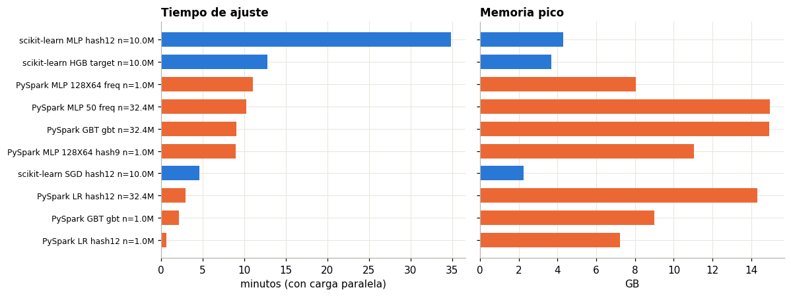

9. Comparación de resultados#
Este capítulo reúne en una sola vista lo medido en los capítulos 4 a 8: calidad por entorno, modelo y codificación, y su costo.
import sys, json
sys.path.insert(0, "../src")
import numpy as np, pandas as pd, matplotlib.pyplot as plt
from ctr.plots import C, style, es
from ctr.config import RES
from ctr.monitor import read_jsonl
from ctr.metrics import t_ci
style()
pd.set_option("display.max_columns", 30)
R = pd.DataFrame(read_jsonl(RES / "sk" / "runs.jsonl")); S = pd.DataFrame(read_jsonl(RES / "spark" / "runs.jsonl"))
S = S[S.status == "ok"]
9.1 Por entorno, modelo y codificación#
Validación, día 29, con 1 millón de filas o el tamaño indicado. Media, desviación e intervalo t al 95 % cuando hay varias semillas.
def fila(env, mod, enc, g, col="v_auc"):
m, s, lo, hi = t_ci(g[col].values)
return {"Entorno": env, "Modelo": mod, "Codificación": enc, "n": int(g.n.iloc[0]), "Semillas": len(g), "AUC": m, "Desv.": s, "IC bajo": lo, "IC alto": hi,
"Log loss": g.v_logloss.mean(), "ECE": g.v_ece.mean(), "Ajuste (s)": g.fit_sec.mean(), "GB pico": g.gb.mean()}
filas = []
e = R[R.exp == "enc"]
for (m, c), g in e.groupby(["model", "enc"]):
filas.append(fila("scikit-learn", m.upper(), c, g))
s = R[R.exp == "scale"]
for (m, c, n), g in s[s.n > 5e6].groupby(["model", "enc", "n"]):
filas.append(fila("scikit-learn", m.upper(), c, g))
sp = S[S.exp.isin(["scale", "full"])].copy()
sp["cap"] = sp.layers.map(lambda l: "x".join(map(str, l)))
for (m, c, ca, n, mi), g in sp.groupby(["model", "enc", "cap", "n", "maxIter"]):
filas.append(fila("PySpark", (m + " " + ca).upper().strip(), c, g))
T = pd.DataFrame(filas).sort_values("AUC", ascending=False).round(4).reset_index(drop=True)
T
| Entorno | Modelo | Codificación | n | Semillas | AUC | Desv. | IC bajo | IC alto | Log loss | ECE | Ajuste (s) | GB pico | |
|---|---|---|---|---|---|---|---|---|---|---|---|---|---|
| 0 | scikit-learn | HGB | target | 10000000 | 5 | 0.7425 | 0.0004 | 0.7420 | 0.7430 | 0.3822 | 0.0132 | 765.2784 | 3.6832 |
| 1 | scikit-learn | MLP | hash16 | 1000000 | 5 | 0.7400 | 0.0009 | 0.7390 | 0.7411 | 0.3848 | 0.0184 | 2198.3239 | 0.6925 |
| 2 | scikit-learn | MLP | hash12 | 10000000 | 5 | 0.7390 | 0.0017 | 0.7369 | 0.7411 | 0.3877 | 0.0313 | 2093.8492 | 4.3030 |
| 3 | scikit-learn | HGB | target | 1000000 | 5 | 0.7390 | 0.0006 | 0.7382 | 0.7397 | 0.3839 | 0.0081 | 71.7215 | 0.4197 |
| 4 | scikit-learn | MLP | hash14 | 1000000 | 5 | 0.7390 | 0.0018 | 0.7367 | 0.7412 | 0.3854 | 0.0168 | 659.8008 | 0.5960 |
| 5 | scikit-learn | MLP | hash12 | 1000000 | 5 | 0.7382 | 0.0017 | 0.7360 | 0.7403 | 0.3855 | 0.0152 | 187.5408 | 0.5727 |
| 6 | scikit-learn | HGB | freq | 1000000 | 5 | 0.7330 | 0.0012 | 0.7315 | 0.7346 | 0.3868 | 0.0107 | 72.5181 | 0.4327 |
| 7 | PySpark | LR | hash12 | 32377421 | 1 | 0.7305 | 0.0000 | 0.7305 | 0.7305 | 0.3891 | 0.0195 | 177.2492 | 14.2981 |
| 8 | PySpark | LR | hash12 | 999123 | 1 | 0.7300 | 0.0000 | 0.7300 | 0.7300 | 0.3889 | 0.0149 | 37.2524 | 7.2163 |
| 9 | scikit-learn | MLP | target | 1000000 | 5 | 0.7299 | 0.0012 | 0.7284 | 0.7314 | 0.3886 | 0.0156 | 60.4194 | 0.2925 |
| 10 | scikit-learn | SGD | hash12 | 10000000 | 5 | 0.7282 | 0.0033 | 0.7241 | 0.7324 | 0.3897 | 0.0120 | 277.3122 | 2.2476 |
| 11 | PySpark | GBT | gbt | 999123 | 2 | 0.7148 | 0.0013 | 0.7032 | 0.7265 | 0.3951 | 0.0159 | 129.3347 | 8.9932 |
| 12 | PySpark | LR | hash12 | 100110 | 1 | 0.7071 | 0.0000 | 0.7071 | 0.7071 | 0.4061 | 0.0254 | 36.3921 | 7.5101 |
| 13 | PySpark | MLP 128X64 | hash9 | 999123 | 1 | 0.7070 | 0.0000 | 0.7070 | 0.7070 | 0.3980 | 0.0129 | 539.3627 | 11.0307 |
| 14 | PySpark | MLP 128X64 | hash9 | 100110 | 1 | 0.7067 | 0.0000 | 0.7067 | 0.7067 | 0.4012 | 0.0203 | 378.1124 | 6.0020 |
| 15 | PySpark | MLP 128X64 | hash9 | 100110 | 5 | 0.7052 | 0.0010 | 0.7039 | 0.7064 | 0.3991 | 0.0105 | 87.6639 | 9.5225 |
| 16 | scikit-learn | SGD | hash16 | 1000000 | 5 | 0.7031 | 0.0160 | 0.6832 | 0.7229 | 0.4291 | 0.0692 | 15.8261 | 0.3085 |
| 17 | PySpark | GBT | gbt | 32377421 | 1 | 0.7025 | 0.0000 | 0.7025 | 0.7025 | 0.4025 | 0.0254 | 544.9015 | 14.9376 |
| 18 | scikit-learn | SGD | hash14 | 1000000 | 5 | 0.7018 | 0.0149 | 0.6833 | 0.7203 | 0.4272 | 0.0649 | 17.0321 | 0.3083 |
| 19 | scikit-learn | SGD | hash12 | 1000000 | 5 | 0.7007 | 0.0136 | 0.6837 | 0.7176 | 0.4278 | 0.0653 | 16.8386 | 0.3076 |
| 20 | PySpark | GBT | gbt | 100110 | 5 | 0.6992 | 0.0027 | 0.6958 | 0.7026 | 0.4007 | 0.0131 | 72.9315 | 8.0016 |
| 21 | scikit-learn | MLP | freq | 1000000 | 5 | 0.6798 | 0.0027 | 0.6765 | 0.6831 | 0.4109 | 0.0257 | 73.0911 | 0.2949 |
| 22 | scikit-learn | SGD | target | 1000000 | 5 | 0.6783 | 0.0329 | 0.6374 | 0.7191 | 0.4405 | 0.0630 | 9.4190 | 0.2038 |
| 23 | PySpark | MLP 128X64 | freq | 999123 | 1 | 0.6743 | 0.0000 | 0.6743 | 0.6743 | 0.4092 | 0.0227 | 664.3447 | 8.0450 |
| 24 | PySpark | MLP 128X64 | freq | 100110 | 5 | 0.6698 | 0.0040 | 0.6648 | 0.6748 | 0.4127 | 0.0264 | 68.6569 | 9.8294 |
| 25 | PySpark | MLP 50 | freq | 100110 | 5 | 0.6687 | 0.0052 | 0.6622 | 0.6752 | 0.4108 | 0.0216 | 19.9642 | 10.5510 |
| 26 | PySpark | MLP 50 | freq | 32377421 | 1 | 0.6288 | 0.0000 | 0.6288 | 0.6288 | 0.4207 | 0.0286 | 614.0606 | 14.9623 |
| 27 | scikit-learn | SGD | freq | 1000000 | 5 | 0.5554 | 0.0141 | 0.5379 | 0.5730 | 0.5092 | 0.1125 | 9.9327 | 0.2039 |
9.2 Barras comparativas de tiempo y memoria#
d = T[T.n > 5e5].sort_values("Ajuste (s)")
d = d[d["Entorno"].eq("PySpark") | d.n.gt(5e6)]
fig, ax = plt.subplots(1, 2, figsize=(11, 4.2), sharey=True)
et = d.Entorno + " " + d.Modelo + " " + d["Codificación"] + " n=" + (d.n / 1e6).round(1).astype(str) + "M"
col = [C["azul"] if x == "scikit-learn" else C["naranja"] for x in d.Entorno]
ax[0].barh(et, d["Ajuste (s)"] / 60, color=col, height=.65); ax[0].set(title="Tiempo de ajuste", xlabel="minutos (con carga paralela)")
ax[1].barh(et, d["GB pico"], color=col, height=.65); ax[1].set(title="Memoria pico", xlabel="GB")
ax[0].tick_params(axis="y", labelsize=8); plt.tight_layout(); plt.show()

Lectura de conjunto:
El orden por calidad no depende del entorno, sino de la representación. Arriba quedan los modelos que ven la identidad de las categorías con muchas filas: HGB con target, MLP y SGD con hashing en scikit-learn, y la LR dispersa de Spark. Abajo queda todo lo que usa frecuencia sola.
El MLP de Spark está acotado por diseño, no por falta de ajuste: con hashing no puede usar más de 1 millón de filas, y con frecuencia pierde la identidad.
El costo crece mucho más rápido que la calidad. hash16 cuesta 12 veces hash12 por 0,002 de AUC. El MLP con 10 millones cuesta 13 veces el de 1 millón por 0,001.
Los tiempos de esta tabla tienen carga paralela y sirven solo para comparar órdenes de magnitud. Las mediciones limpias están en el capítulo 7.